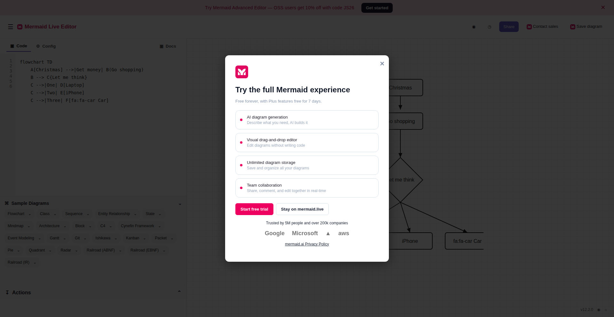

RESEARCH PROJECT · WEB ENVIRONMENTS
WebAnything: From the Wild Web to Scalable Agent Environments via Fully Automated Reconstruction
Anonymous submission
2026
WebAnything reconstructs real websites as source-grounded, executable, and reusable environments—then freezes each candidate and verifies it independently before release.
Why WebAnything
A web environment should preserve the task, not just the screenshot.
Static capture misses interaction depth. Hand-built mirrors can scale poorly. WebAnything uses browser-observable evidence to reconstruct the visible state and the behavior required by an agent task.
Visual Similarity
Match the rendered source states that an agent actually observes.
Interaction Fidelity
Preserve controls, state transitions, routes, and deterministic reset.
Task Preservation
Keep the complete path needed to finish the target workflow.
Method
Explore. Rebuild. Freeze. Verify.
The Builder and Verifier are separated by a frozen candidate boundary. Verification findings can trigger a focused loop without discarding the source evidence already collected.
Coverage policyFull / JITPredefined rules · automatic checking · continuous update
GARDENERBuilder AgentExplore · Rebuild · Freeze
- SEEDReal Website URLPublic source
- 01Exploration & CapturePages · states · interactions
- 02Observed EvidenceDOM · UI · screenshots · resources
- 03Grounded ReconstructionLayout · behavior · assets
- 04Candidate MirrorFrozen and versioned
- BOTANISTIndependent VerifierFidelity · functionality · safety
- 05Verified MirrorHigh fidelity · interactive
- DIGITAL GARDENAgent Environment ReleaseEvaluation · training
Implementation ErrorLocal Repair → Grounded Reconstruction
Evidence GapTargeted Recapture → Observed Evidence
CHECKPOINTFrozen candidate boundaryBuilder output is fixed before independent verification.
Stage 01
Explore the source through the browser
The Builder follows the target task, records page states, and collects the evidence needed to reproduce the observed path.
- Interact and navigate
- Collect page states
- Record interaction metadata
DOMRendered structureObserved elements and state
UIInteraction metadataControls, routes, and actions
IMGPage snapshotsVisual reference at each step
NETNetwork resourcesSource-observed assets only
Digital Garden · environment pool
One construction pipeline, many kinds of web work.
The artifact pool spans commerce, development, travel, finance, media, public services, search, productivity, education, office work, social tools, healthcare, lifestyle, and logistics.
229sites with accepted tasks in the newer batch
93.1%completion against the 7,320-task target quota
Observed task depth
Accepted executions include substantial multi-step interaction.
Statistics below use the 6,172 accepted source tasks whose execution traces were analyzed in the paper.
Tasks over 10 tool steps34.7%
2,139 of 6,172 accepted tasks
Evaluation
Environment quality and downstream utility.
Results use distinct evaluation settings. Fidelity compares matched historical states; post-training reports the trained model under each benchmark's stated denominator and harness.
Source fidelity · 14 historical states
Higher aggregate fidelity on all three reported metrics.
Pixel similarity0.9240WebHarbor 0.8083
SSIM0.7904WebHarbor 0.6260
Text F10.8541WebHarbor 0.2617
12 wins · 2 ties · 0 losses in the blind overall-fidelity audit
Post-training · Qwen3.5-9B Instruct
Training on WebAnything interactions transfers to external benchmarks.
REAL+9.9pp
22/91 → 31/91, jointly valid tasks
Odysseys-Easy+6.25pp
Rubric Avg, 44 jointly valid tasks
WebArena-Verified+13.33pp
Overall, internal harness
Task-driven case study
One URL. One query. A working interaction path.
Exact user query
“在 Mermaid Live Editor 中，把默认流程图改为「草稿 → 审核 → 发布」，确认预览显示三个节点，然后导出 SVG。”
Edit the default diagram to “Draft → Review → Publish,” confirm all three nodes in the preview, then export an SVG.
1 · Open the reconstructed editor
1 / 4

Verifier report · passed
The reconstructed page supports the complete demonstrated task path.
The replay edits the diagram, observes a responsive preview, opens the Actions menu, and downloads an SVG containing the requested labels.
Read the case studyScope note. The Verifier report passed. The original supervisor run stopped at blocked_retry_limit because its gate rejected structured JSON assertions; the validator and regression test were corrected and the saved Verifier output passed the repaired gate. This case establishes the demonstrated task path, not a fresh end-to-end supervisor pass.
Independent verification
Failures become evidence for the next repair.
The Verifier checks fidelity, functionality, safety, and reproducibility against the frozen candidate. Evidence gaps guide targeted recapture; implementation errors guide local repair.
Use WebAnything
Start from a URL and a task.
Install the local skill once, then ask an agent such as Codex to reconstruct a site in Full or JIT mode. The repository includes the pipeline, verifier contracts, demos, and the 244-site metadata inventory.
terminal
# One-time setup
uv sync --locked --extra browser --extra visual --extra builder
uv run python -m playwright install chromium
npm --prefix tools/codex-mirror-trace ci
uv run webanything setup
# Then reconstruct a task path
uv run webanything create https://example.org/ \
--mode jit \
--task "Complete the target workflow"Citation
WebAnything
The manuscript is currently anonymous. This citation block can be updated with authors and venue after the review period.
@misc{anonymous2026webanything,
title = {WebAnything: From the Wild Web to Scalable
Agent Environments via Fully Automated Reconstruction},
author = {Anonymous Authors},
year = {2026}
}